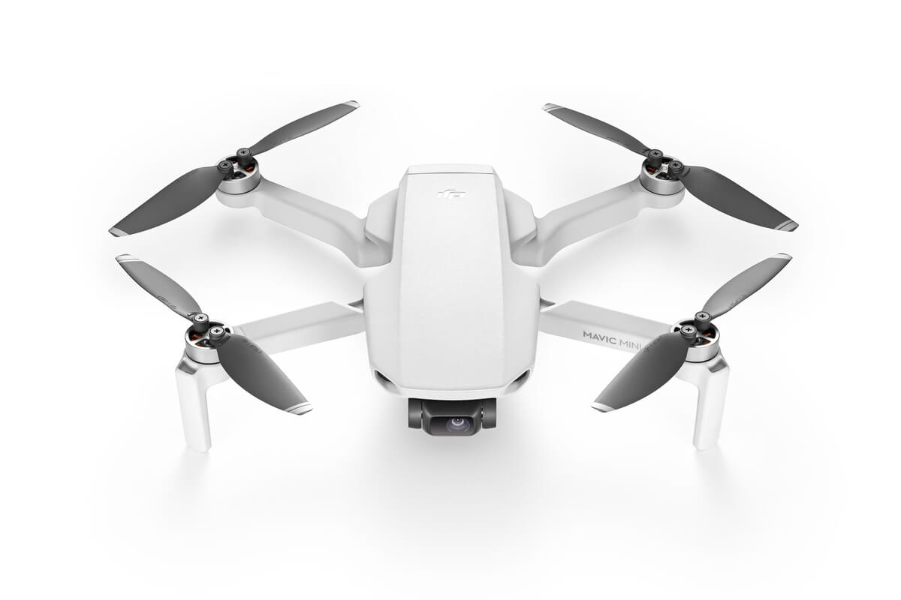
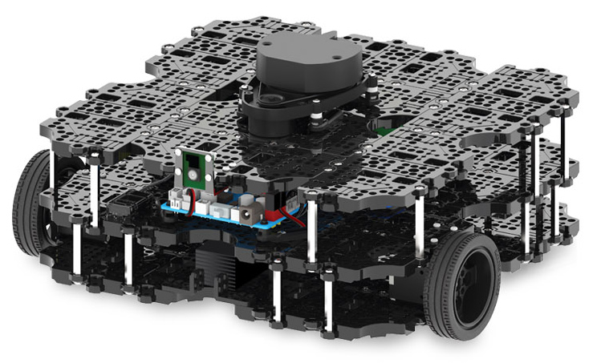

Current Projects
Autonomous Drone
I am currently working on an autonomous drone that can be used for autonomous drone racing. I aim to follow the complete creation lifecycle of the project, from design and printing of the chassis, the implementation of the separate electronics to the complete creation of the code from the ground up.
Previous Projects
Self-Navigating Robot
For my dissertation, I created a control system for a differential drive robot that could navigate unknown environments to a destination, while avoiding both static and moving obstacles. When active, the robot would also create a map of its environment for future reference, and would track its route along the map. The project was created using ROS and C++, with a GUI created using Python to activate and control the robot when required.
Autonomous Collision Detection and Avoidance System
A collision detection and avoidance system was created for self-driving cars to safely detect, asses and avoid obstacles safely while travelling. The system consisted of several hundred fuzzy logic rules, in order to handle any possible combination of vehicle speed, obstacle direction and obstacle size. This system was created using the Matlab scripting language, with testing scenarios being sequentially generated to ensure safety in all possible combination of conditions.